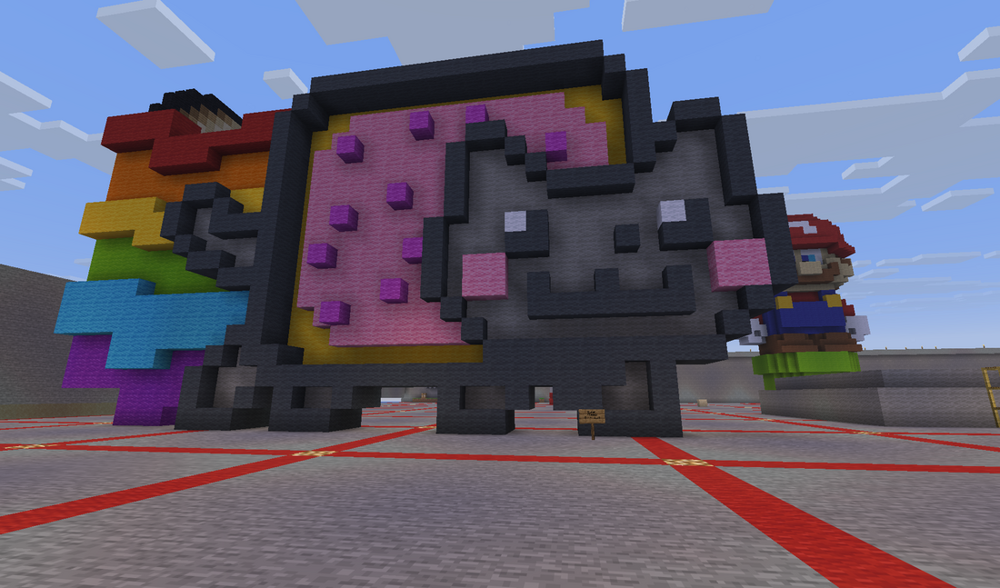
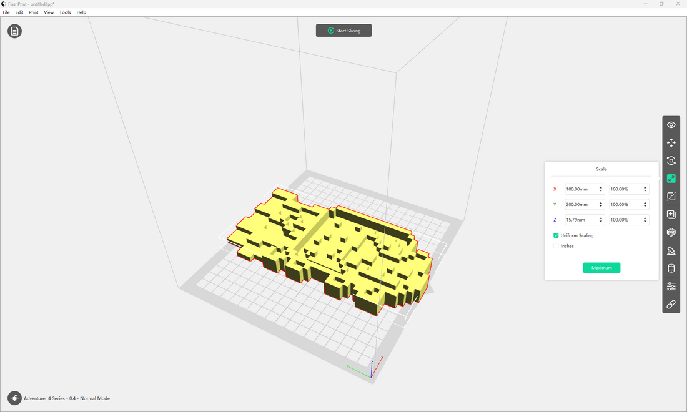
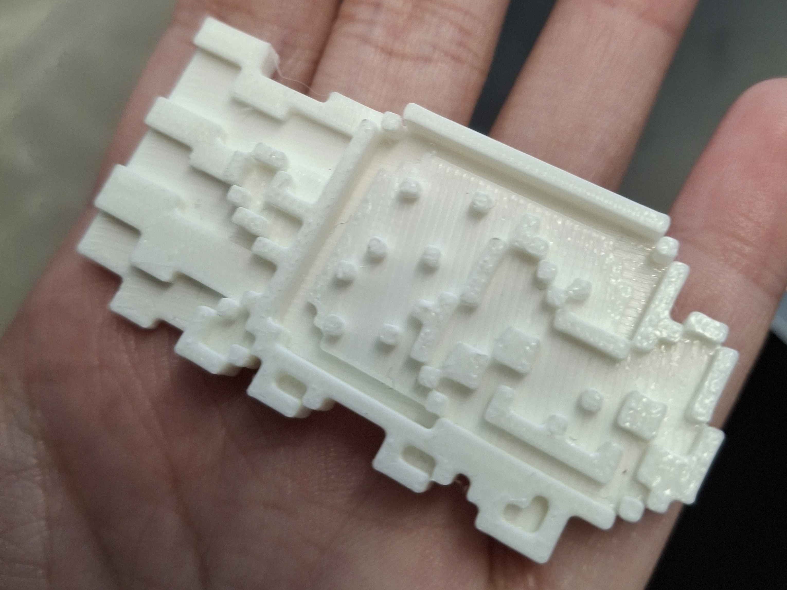

Tabby-Tammy
Tammy Tran's Portfolio


I had decided to recreate the Nyan Cat pixel art as accurately as I could as I feel very nostalgic
for the Nyan Cat animation, especially since we were covering memes right before this project in
particular so it had already been on my mind. I knew that this particular pixel art would be 3D
printed, so I made a lot of conscious decisions while building to create a model that would print well.

As a whole, I'm pretty proud with how the 3D print turned out, especially after seeing the "draft"
that was made as a print by the professor alongside everyone else's builds.